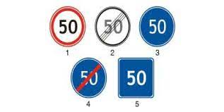
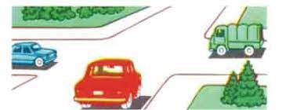
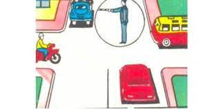
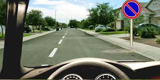
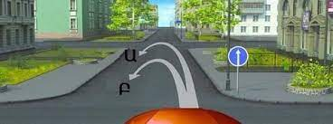
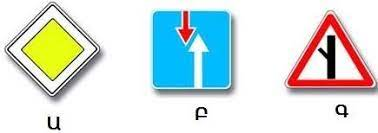
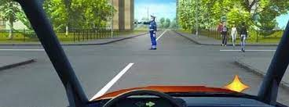
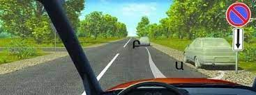
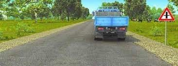

Թեստ 29
30:00
1. «Ճանապարհային երթևեկության անվտանգության ապահովման մասին» ՀՀ օրենքի համաձայն` երթևեկության գոտի է համարվում`
2. «Ճանապարհային երթևեկության անվտանգության ապահովման մասին» ՀՀ օրենքի համաձայն` ազգային վարորդական վկայականները տրվում են`
3. Տրանսպորտային միջոցների շահագործումն արգելվում է, եթե`
4. Տրանսպորտային միջոցների շահագործումն արգելվում է, եթե`
5. Եթե համապատասխան նշաններով կահավորված երկայնական թեքությամբ ճանապարհահատվածներում հանդիպակաց երթևեկությունը դժվարացած է, ապա ճանապարհը պետք է զիջել`
6. Նշաններից ո՞րն է ցույց տալիս 50 կմ/ժ առավելագույն արագության սահմանափակման գոտու վերջը:

7. Խաչմերուկը վերջինը կանցնի`

8. Վարորդներից ո՞վ իրավունք ունի երթևեկել ուղիղ:

9. Պարտավոր է՞ վարորդը վերադասավորվել աջ գոտի և նոր միայն կատարել աջ շրջադարձն այս իրավիճակում
10. Ո՞ր տրանսպորտային միջոցներին է թույլատրվում կայանել տվյալ ճանապարհային նշանի ազդեցության գոտում:

11. Երեխաների կազմակերպված խմբեր փոխադրող տրանսպորտային միջոցների երթևեկությունը թույլատրվում է`
12. Կապույտ գույնի առկայծող փարոսիկ և հատուկ ձայնային ազդանշան միացրած տրանսպորտային միջոց մոտենալու դեպքում ընդհանուր օգտագործման տրանսպորտային միջոցների վարորդները պետք է՝
13. Եթե լուսացույցի ազդանշանների նշանակությունները հակասում են առավելության նշանների պահանջներին, ապա վարորդները պետք է ղեկավարվեն`
14. Ո՞ր հետագծով է թույլատրվում հետադարձ կատարելը

15. Չկարգավորվող խաչմերուկում ո՞ր նշաններն են առավելություն տալիս վարորդին հատվող ճանապարհով երթևեկողների նկատմամբ

16. Աջ շրջադարձն այս իրադրությամբ կատարում ենք
17. Այս իրավիճակում աջ շրջադարձ թույլատրվո՞ւմ է

18. Նշվածներից ո՞ր վայրում է թույլատրված կանգառ կատարել

19. Թույլատրվո՞ւմ է վազանցել բեռնատարին:
